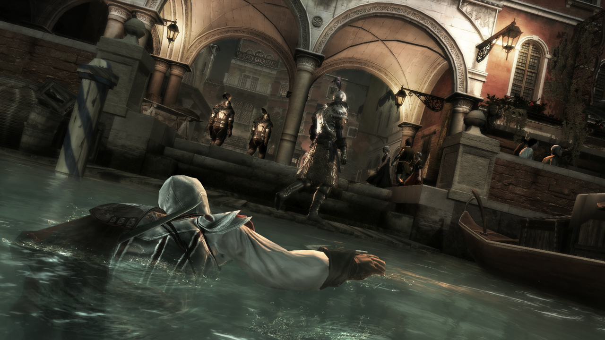

Assassins Creed 2 is very beautiful and interesting game. It is a game which is full of action and adventure. This is a game which has historical background. This games belongs from the series of Assassin Creed.It is second instalment of this series. This game is developed by Ubisoft Montreal and published by Ubisoft. It was released on November 17, 2009.
The quality of machine animus is that this machine gets you back in to your past and revisit your Genetic memories. So when he visit his genetic memories. He decided to gets back into hi old village and kill all those peoples who killed his family. So now there is a battle between player and enemies. In this battle player can also use some old types of weapons. Player can also use hi special abilities to kill the enemies. If you want to complete this story then download and install assassins creed 3. Which is the next part of this game. Assassins creed iv black flag and Assassins creed revelations is also latest parts from this series.

To download Assassins Creed II Click HERE